取扱説明書
Slipstream Live は、ブラウザがどれだけ先まで映像を読み込めているかを監視し、再生速度をほんの少しだけ上げ下げすることで、映像を止めずにライブ配信の「今」へ近づけ続けます。このページでは、インストール方法・すべての設定項目・うまく動かないときの対処をまとめています。
1 はじめに
ライブ配信で見えている映像は、配信者が実際にしゃべっている瞬間より必ず数秒遅れています。この遅れは回線が乱れるたびに増えていき、放っておいても縮みません。
Slipstream Live は、どれだけ先まで映像を読み込めているか（バッファ残量）を 1 秒間に約 50 回測り、再生速度をほんの少しだけ上げ下げすることで、映像を止めずに配信の「今」へ近づけ続けます。
| こんなとき | Slipstream Live の動き |
|---|---|
| 遅れているが、先の映像は十分読み込めている | 少しだけ加速（1.25x）して追いつく |
| 読み込み済みの映像がほぼ尽きた | 0.15x まで落とし音量も下げて、完全停止を回避 |
| 問題なし | 何もしない（通常の 1.00x） |
インストール後は、視聴中に何か操作する必要はありません。
2 動作環境
| Manifest Version | V3 |
| Chrome / Edge / Brave など Chromium 系 | v128 以降 |
| Mozilla Firefox | v140.0 以降 |
| Firefox for Android | v142.0 以降 |
| 対応サイト | YouTube（m.youtube.com・youtube-nocookie.com を含む）、Twitch（player.twitch.tv を含む）、ツイキャス |
| UI 言語 | 日本語・English・한국어・Deutsch・Español・Français・Português (BR)・简体中文・繁體中文（ブラウザの言語設定に追従） |
3 インストール方法
3.1 Chrome / Edge / Brave など Chromium 系ブラウザ
Chrome ウェブストアからインストールします。
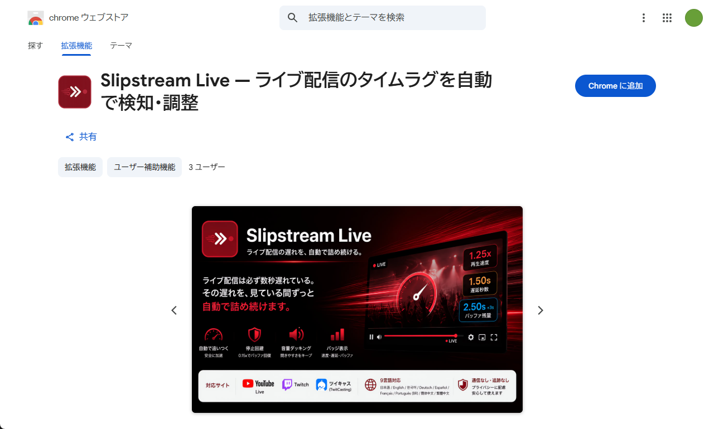
インストール後、ツールバーのパズルピースのアイコンから Slipstream Live を固定しておくと、アイコンが常に表示されて便利です。
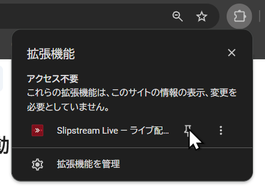
3.2 Firefox
Firefox アドオンからインストールします。
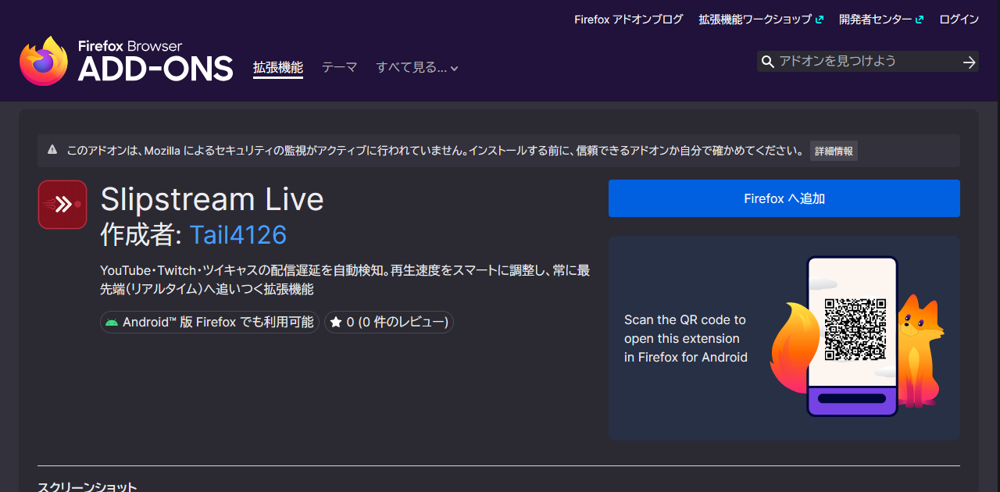
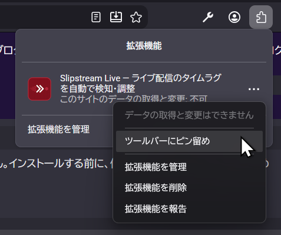
3.3 ソースからインストールする場合（開発者・手動インストール向け）
Chromium 系ブラウザ
- リポジトリを ZIP でダウンロードして解凍します（
git cloneでも構いません）。 - アドレスバーに
chrome://extensionsと入力して開きます。 - 画面右上の「デベロッパー モード」をオンにします。
- 「パッケージ化されていない拡張機能を読み込む」をクリックし、解凍したフォルダ（
manifest.jsonが入っている階層）を選びます。
Firefox — 一時的な読み込み（Firefox を閉じると消えます）
- アドレスバーに
about:debugging#/runtime/this-firefoxと入力して開きます。 - 「一時的なアドオンを読み込む…」をクリックします。
- 解凍したフォルダ内の
manifest.jsonを選択します。
Firefox — 恒久的なインストール（Developer Edition / Nightly 限定）
- フォルダの中身を ZIP 圧縮します。
about:configでxpinstall.signatures.requiredをfalseに変更します。about:addonsの右上の歯車から「ファイルからアドオンをインストール…」で ZIP を選びます。
3.4 動作確認
- YouTube・Twitch・ツイキャスのいずれかでライブ配信を開きます。アーカイブやクリップでは動作しません。
- ツールバーの Slipstream Live アイコンをクリックします。
- 「全サイト共通」パネルで「再生速度倍率を表示」をオンにします。
- プレイヤーのコントロールバーに小さく
1.00xと表示され、動作に応じて色が変われば成功です。
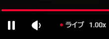
4 各部の名称（設定画面）
ツールバーのアイコンをクリックすると設定画面が開きます。同じ画面は、ブラウザの拡張機能管理画面から「オプション」として独立したタブで開くこともできます。
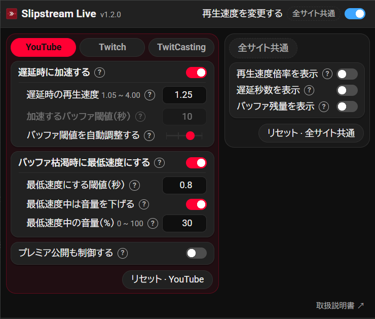
| 番号 | 名称 | 説明 |
|---|---|---|
| 1 | アイコン・タイトル | アイコンをクリックするとプロジェクトページが開きます。名前の右にバージョン番号が表示されます。 |
| 2 | 再生速度を変更する | マスタースイッチ。オフにすると制御もバッジ表示もすべて停止します。「全サイト共通」の印が付いています。 |
| 3 | サイトタブ | YouTube / Twitch / TwitCasting。それぞれ別々に値を保存し、今開いているサイトのタブが自動で選ばれます。 |
| 4 | サイト別設定パネル | 選択中のサイトの、加速に関する設定と最低速度に関する設定。 |
| 5 | ? ボタン | その項目のわかりやすい説明が開きます。 |
| 6 | リセット · サイト名 | 選択中のサイトの設定だけを既定値に戻します。 |
| 7 | 全サイト共通パネル | プレイヤー上のバッジ 3 種類のスイッチ。 |
| 8 | リセット · 全サイト共通 | 全サイト共通の設定を既定値に戻します。 |
- 変更は即時反映されます。保存ボタンはありません。
- 現在使われない項目はグレー表示になります。たとえば「バッファ閾値を自動調整する」がオフ以外のとき、「加速するバッファ閾値（秒）」は操作できません。
- Twitch タブを選んでいるときだけ、既定値が大きい理由の注釈がパネル下部に表示されます。
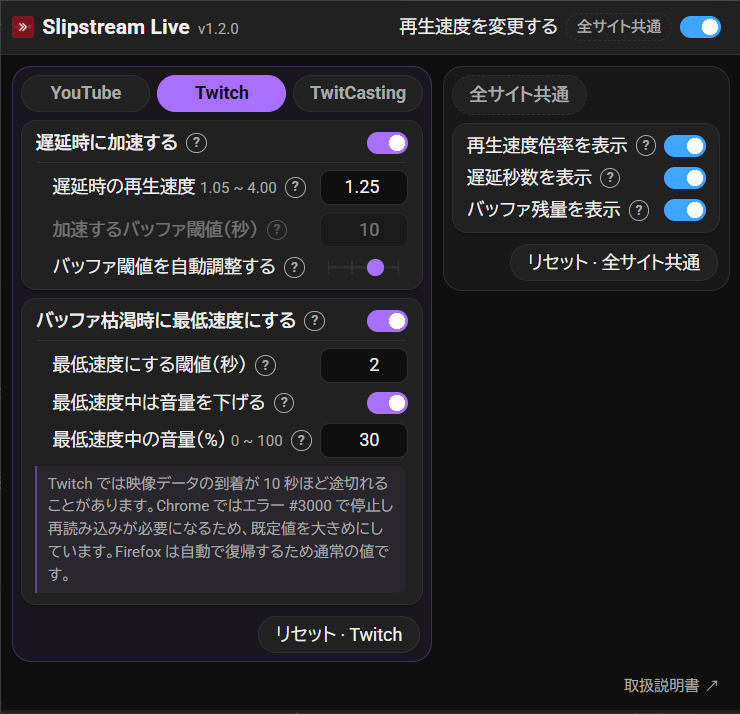
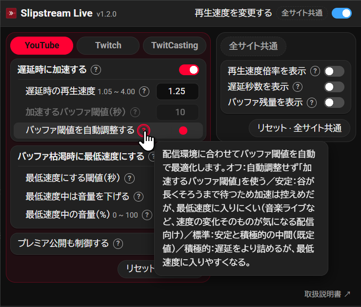
5 バッジの見かた
3 種類のバッジはいずれも既定でオフです。「全サイト共通」パネルでオンにしてください。表示位置はプレイヤーのコントロールバー内で、コントロールバーが見つからない場合はプレイヤー左上の小さな黒い帯に切り替わります。
| バッジ | 表示例 | 意味 |
|---|---|---|
| 再生速度倍率 | 1.25x | 実際の再生速度。文字色で現在のモードがわかります。 |
| 遅延秒数 | 1.50s | 配信の最先端からどれだけ遅れているか。巻き戻して視聴中（追っかけ再生）は遅延の数値に意味がないため、数値の代わりに (DVR) と表示されます。 |
| バッファ残量 | 2.50s | 何秒先まで読み込めているか。+9s が付く場合、隙間の向こうにさらに読み込み済みの映像があります。 |
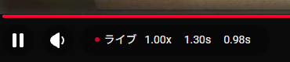
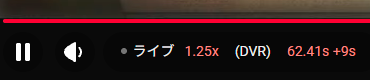
(DVR) になります。この例ではバッファを 62.41 秒、さらに隙間の先に 9 秒ぶん読み込んでいます。6 3 つの制御モード
| モード | 優先度 | バッジ色 | 速度 | 発動条件 |
|---|---|---|---|---|
| Floor（最減速） | 最高 | 青 #83c1ff | 0.15x（固定） | バッファ枯渇の直前。緊急ブレーキ＋音量ダッキング。 |
| Speedup（加速） | 低 | 赤 #ff8983 | 1.25x（既定） | バッファに十分な余裕があり、かつ加速が実際に効いている。最先端へ追いつく。 |
| Normal（通常） | — | 白 #eee | 1.00x | 何もしない。 |
優先度の高いモードが常に優先されます。Floor の 0.15x は安全装置なので、意図的に変更できないようにしてあります。
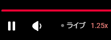
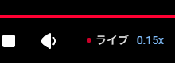
各しきい値には現在のモードへ留まる向きにヒステリシスが掛かっており、境界ちょうどで倍率と音量が細かく往復しません。幅は全段階で 0.2 秒です。加えて、加速を始めるときだけは 2 秒の間隔を空けます。それ以外の遷移（加速からの離脱、Floor の出入り）は待たせません。介入を強める方向だけを慎重にし、弱める方向・安全側へ戻る方向は即座に反映する、という考え方です。判定に使う値そのものが揺れる以上、しきい値の幅だけでは往復を止めきれないためです。
加速が効かない状況では、自動的に加速をやめます。ライブ映像は実時間でしか作られないため、配信の最先端に追いついた時点で、それ以上詰められる遅れは存在しなくなります。そこで倍率を上げたままにしておくと、再生がセグメントの到着を追い越して細かく止まり、実効速度はかえって落ちます。Slipstream Live は「加速で詰められるはずだった秒数」と「実際に詰められた秒数」を突き合わせ、後者が前者の半分に満たない状態が続けば加速を見送ります。その後あらためて遅れが生じれば、すぐに加速へ戻ります。
制御しないもの
- アーカイブ（VOD）・クリップ・広告再生中には一切手を出しません。ライブ再生中のみが対象です。
- YouTube のプレミア公開は既定では対象外です。録画した動画を決まった時刻からライブとして流す機能で、再生中はライブ配信と見分けが付きませんが、プレミア公開は「みんなで同じ瞬間を見る」ことが目的の配信形態であり、追いついてもチャットより先を見てしまうだけだからです。通常のライブ配信と同じように扱ってほしい場合は、YouTube タブの一番下にある「プレミア公開も制御する」をオンにしてください。
- ツイキャスの低遅延配信は対象外です。低遅延モードは WebRTC で映像が届くため、測定できる先読みバッファがなく、再生速度を変えても仕様上無視されます。そもそもほぼリアルタイムなので、詰めるべき遅れがありません。
- YouTube とツイキャスでは、あなたがプレイヤーのメニューで 1.00x 以外の速度を選んだ場合、Slipstream Live は制御を譲って手を引きます。速度を通常に戻せば自動制御が再開します。Twitch には速度変更メニューがないため常に Slipstream Live が制御し、あわせて Twitch 自身の追いつき機能が競合しないよう抑え込みます。
7 設定項目一覧
7.1 サイト別設定（サイトごとに別々に保存）
| 設定項目 | 範囲 / 刻み | YouTube | Twitch | TwitCasting | 説明 |
|---|---|---|---|---|---|
| 遅延時に加速する | ON / OFF | ON | ON | ON | 追いつき機能のスイッチ。 |
| 遅延時の再生速度 | 1.05x〜4.00x / 0.05 | 1.25x | 1.25x | 1.25x | 加速時の倍率。大きいほど速く追いつけますが、バッファ消費も増えます。 |
| 加速するバッファ閾値（秒） | 0.1〜100.0 / 0.1 | 10.0 | 10.0 | 10.0 | 自動調整がオフのときだけ使われます。この秒数まで読み込めていたら加速します。 |
| バッファ閾値を自動調整する | オフ / 安定 / 標準 / 積極的 | 標準 | 標準 | 標準 | 加速して安全かどうかを Slipstream Live に判断させます。推奨。 |
| バッファ枯渇時に最低速度にする | ON / OFF | ON | ON | ON | 0.15x の緊急ブレーキのスイッチ。 |
| 最低速度にする閾値（秒） | 0.0〜10.0 / 0.1 | 0.80 | 2.00 (FF 0.50) | 0.30 | バッファ残量がこれを下回っている間 0.15x にします。 |
| 最低速度中は音量を下げる | ON / OFF | ON | ON | ON | 0.15x の間だけ音量を絞ります。 |
| 最低速度中の音量（%） | 0〜100 / 5 | 30 | 30 | 30 | 今の音量に対する割合。100 で変化なし、0 で無音。 |
| プレミア公開も制御する | ON / OFF | OFF | — | — | プレミア公開をライブ配信として扱うか。オフのままなら一切手を出しません。他の 2 サイトに相当する仕組みが無いため、この行は YouTube タブにだけ現れます。 |
FF = Firefox での既定値。Firefox はバッファ残量の報告のされ方が異なるため、専用の値を持ちます。現在これが効くのは Twitch だけです。
Twitch の閾値だけ大きいのはなぜ？ Twitch では映像データの到着が 10 秒ほど途切れることがあります。Chrome ではエラー #3000 で停止し再読み込みが必要になるため、既定値を大きめにしています。Firefox は自動で復帰するため通常の値です。
7.2 「バッファ閾値を自動調整する」の 4 段階
| 段階 | 谷を貯める窓 | 安全余裕係数 | 下限への上乗せ | ヒステリシス | 性格 |
|---|---|---|---|---|---|
| オフ | — | — | — | 0.2s | 自動調整せず「加速するバッファ閾値」をそのまま使います。 |
| 安定 | 60s | 10 | 1.0s | 0.2s | 最も長い窓と最も大きな係数。谷が長時間そろって高いときにしか加速しないため、最低速度へ落ちにくい代わりに加速の機会は少なくなります。音楽ライブ向け。 |
| 標準 | 30s | 5 | 0.3s | 0.2s | 安定と積極的の中間。既定値で、たいていの環境はこれで足ります。 |
| 積極的 | 5s | 3 | 0.1s | 0.2s | 短い窓で直近の余裕へ素早く反応し、遅れをより詰めます。その代わり最低速度に入る頻度は上がります。 |
窓と係数を同じ向きへ動かしている理由。 窓が長いほど谷の履歴はそろいにくく、係数が大きいほど残ったばらつきが強く効きます。片方だけ動かしても、段階ごとの性格の差がはっきり出ません。
「安定」が音楽ライブに向く理由。 ライブや DJ セットのような演奏の配信では、再生速度の変化がそのまま耳に届きます。ブラウザが音の高さは保ってくれますが、テンポは変わりますし、0.15x まで落ちれば音は完全に崩れます。「安定」は倍率が動く回数そのものを減らし、緊急ブレーキも掛かりにくくします。その代わり最先端からは少し遅れたままになりますが、チャットに参加せず聴くことが目的なら、ほとんど気になりません。
「下限への上乗せ」は何に足されるか。 最低速度にする閾値に足されます。この機能をオフにしている場合、「安定」「標準」「積極的」は代わりにセグメント 1 個ぶん（サイトが報告する目安で 0.5〜5 秒）を下限として確保します。谷が 0 を割っても受け止める 0.15x のブレーキが無いためです。
判定の鈍らせ方。 「安定」「標準」「積極的」ではヒステリシスが入口を 0.2 秒高くし、さらにモード切り替えから 2 秒は次の加速を始めません。「オフ」ではどちらも掛からず、残量が設定した数字に達した瞬間に加速し、下回った瞬間に戻ります。0.15x のブレーキは別の判定なので、そちらのヒステリシスは「オフ」でも働きます。
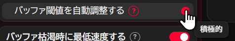
7.3 全サイト共通設定
| 設定項目 | 既定値 | 説明 |
|---|---|---|
| 再生速度を変更する | ON | マスタースイッチ。オフにすると Slipstream Live は完全に停止します。 |
| 再生速度倍率を表示 | OFF | 現在の再生速度をプレイヤー内に表示。 |
| 遅延秒数を表示 | OFF | 最先端からの遅れを表示。 |
| バッファ残量を表示 | OFF | 何秒先まで読み込めているかを表示。 |
8 動作の仕組み
Slipstream Live は 20 ミリ秒ごとにバッファ残量（何秒先まで映像を読み込めているか）を測り、その値から 3 つのモードのどれかを選びます。
難しいのは「いつ加速して安全か」の判断です。バッファ残量は一定ではありません。映像は「セグメント」という数秒単位の塊で届くため、塊が届いた瞬間にドンと増え、再生とともにすーっと減っていきます。グラフにするとのこぎり波の形になります。たまたま山（ピーク）を見て「余裕たっぷり」と誤解して加速すると、直後の谷でバッファを使い切って映像が止まります。
そこで Slipstream Live は、1 回の測定値を信じる代わりに、配信ごとに自動調整される窓で谷の位置を統計的に推定し、その余裕が「確保したいバッファ量」（最低速度にする閾値＋段階ごとの上乗せ量。この機能がオフのときはセグメント 1 個ぶん）を上回っている間だけ加速します。安全係数を大きく取っているため、谷が安定して同じ高さでないと余裕は生まれず、回線が不安定なときは自然と加速が抑制されます。データが足りない間は「わからないので何もしない」が自動的に成立します。
この判定の上に、ひとつだけ近道があります。残量が 20 秒（「最低速度にする閾値」を大きくしている場合は「確保したいバッファ量＋10 秒」のうち高いほう）を超えている間は、谷の推定を待たずに加速し、15 秒を下回ると従来の判定へ戻ります。シーク直後はバッファの埋め直しが速すぎて統計が一時的に使えなくなるため、その場面でも反応を保つための仕組みです。近道が働くのは自動調整が「安定」「標準」「積極的」のときだけです。「オフ」では、残量が設定した閾値に達した時点で加速を開始し、下回った時点で戻る、という単純な動きになります。
ここまでは「加速して安全か」の話ですが、それとは別に「加速する意味があるか」も見ています。ライブ映像は実時間でしか作られないため、どれだけ速く再生してもバッファは 1.0 倍でしか埋まりません。貯金を使い切って配信の最先端に到達したあとも倍率を保つと、再生が次のセグメントの到着を追い越し、そのたびにコンマ数秒だけ止まります。均せば実効速度は 1.0 倍まで落ち、映像だけが数秒おきにカクつきます。止まるたびに読み込みが追いつくため、この状態はバッファ残量では検出できません。そこで Slipstream Live は「加速で詰められるはずだった秒数」と「実際に詰められた秒数」を 12 秒の窓で突き合わせ、後者が前者の半分に満たなければ加速を見送ります。遅延が一定量ぶん増えるか 30 秒経てば、見送りは解除されます。この一定量はサイトのセグメント長に連動するため、遅延の絶対値がサイトによって 10 倍以上違っても同じ意味になります。
バッジの再描画は毎秒 10 回までに抑えられ、統計もすべて平滑化されているため、速度が目に見えてばたつくことはありません。制御対象が見つからない間はタイマーを止めず、1 秒周期の見張りモードへ落ちます。広告は本編と同じ映像要素で再生され、終わってもメディアイベントを出さないためです。タブが表に戻った瞬間にも一度だけ実行されます。
セグメント長を知らずに谷を求める方法など、数式を含む詳細は README にあります。
9 困ったときは
まったく加速しない
自動調整はわざと慎重に作ってあります。回線が不安定だと「加速は危険」と判断するためです。まず「バッファ閾値を自動調整する」を 1 段階「積極的」寄りに変えてみてください。それでも足りなければ「オフ」にして「加速するバッファ閾値（秒）」を手動で設定します。15〜20 秒あたりから始めて、様子を見ながら下げるのがおすすめです。1.1.3 以降、「オフ」では残量が設定値に達した瞬間に加速し、下回った瞬間に戻ります（ヒステリシスも 2 秒の待ちもありません）。倍率の切り替わりが多すぎると感じる場合は、閾値を上げるか自動調整をオンに戻してください。
シーク直後、バッファは十分あるのに 1.00x のまま
バージョン 1.1.0 以降であることを確認してください。このバージョンから、バッファ残量が 20 秒を超えていれば谷の統計を待たずに加速します。シーク直後は読み込みが一気に進むため、統計がしばらく使えない状態になるためです。
バッジは 1.25x なのに速くなっている感じがしない・数秒おきに一瞬止まる
配信の最先端に追いついた状態です。ライブ映像は実時間でしか届かないため、そこから先は加速しても止まる回数が増えるだけで速くはなりません。バージョン 1.1.2 以降ではこれを自動で検出して加速を見送ります。症状が出る場合はまずバージョンを確認し、それでも続く場合はデバッグログの gain= を見てください（FUTILE と出ていれば検出は働いています）。
最低速度（0.15x）に入る頻度が高い
まず「バッファ閾値を自動調整する」を 1 段階「安定」寄りに変えてみてください。窓が長く安全余裕係数も大きくなるため、谷が十分に安定していると確認できるまで加速しなくなります。それでも頻発する場合は、手動閾値を大きめにするか、「遅延時の再生速度」を下げてバッファの消費を緩やかにしてください。「最低速度にする閾値（秒）」を下げれば発動は遅くなりますが、実際に映像が止まるリスクは上がります。
何も起こらない
「再生速度を変更する」がオンになっているか、VOD やクリップではなくライブ配信を見ているか、プレイヤーのメニューで再生速度を手動変更していないかを確認してください。プレミア公開を見ている場合は、YouTube タブの一番下にある「プレミア公開も制御する」も確認してください。既定はオフなので、オンにするまでは意図的に制御対象から外れます。
ツイキャスで何も起こらない
低遅延配信を見ていないか確認してください。低遅延モードは WebRTC で配信されるため、Slipstream Live の制御対象外です。プレイヤー側の設定で低遅延をオフにすれば動きます。
バッジが表示されない
既定ではオフになっています。「全サイト共通」パネルでオンにしてください。サイトのコントロールバーが見つからない場合は、プレイヤー左上に小さな黒い帯として表示されます。
Twitch の映像だけエラーで止まる・固まる（Slipstream Live とは無関係の場合）
Slipstream Live は再生「速度」を調整するだけなので、映像が完全に止まったり「エラー #〇〇〇〇」が出たりするのは、たいてい Twitch やブラウザ側の問題です。次を上から順に試してください。
- status.twitch.com で Twitch 側の障害情報を確認する。
- シークレットウィンドウ（
Ctrl+Shift+N/ Mac はCmd+Shift+N）で同じ配信を開く。直るなら原因は拡張機能かキャッシュです。 - 拡張機能、特に広告ブロッカーを一度すべてオフにする。Twitch は広告を映像そのものに埋め込んでいるため、広告ブロッカーが原因のことが非常に多いです。
chrome://settings/helpから Chrome を最新版に更新する。公式サポートは最新 2 バージョンのみです。Ctrl+Shift+Delete（Mac はCmd+Shift+Delete）でキャッシュと Cookie を削除する。
それでも画面が固まる・真っ黒になる場合は、chrome://settings/system の「ハードウェア アクセラレーション」を今と逆に切り替えて再起動してみてください。直らなければ元に戻してください（常時変更しておく設定ではありません）。
Twitch 公式の情報も参考になります： 再生に関する問題のトラブルシューティング、 対応するブラウザ、 ビデオ再生の問題を報告する方法。
10 デバッグログの取得方法
不具合を報告する際、デバッグログがあると原因の特定が容易になります。
- 配信ページを開き、
F12でブラウザのコンソールを開きます。拡張機能のコンソールではありません。 - 下の 1 行を実行します。
- 症状が出ている状態で 30 秒ほど待ち、出力をコピーします。
1 秒ごとに、現在のモード・実再生速度・バッファ残量・短期統計・谷の統計・room の計算式・近道の基準値 ample・超過消費の累積 drift・定常判定 calm・加速の実効性 gain が出力されます。
- バッファ関連の数値が
----の場合、値を取得できていない状態です。多くはバッファが空と報告されているためです。 calm=NOが続く場合は定常でないと判定されており、谷の履歴が貯まらないためroomも----になります。ただし残量がampleを超えている間は、その状態でも加速します。lat=はサイトが報告する遅延です。sdは 5 秒窓の標準偏差、jumpは直前 1 秒での最大変化量を表します。実測では定常時のsdは 0.11 以下、jumpは 0.2 未満に収まります。jumpがこれを大きく超え続ける場合、遅延の測定ノイズが大きく、見送りの自動解除が意図せず頻発している可能性があります。gain=は「実際に詰められた秒数 / 詰められるはずだった秒数」です。右の値が 1 秒を超えているのに左が半分に届かないとFUTILEが付き、加速を見送っている状態になります。timer stoppedは機能を OFF にしたことを意味します。再生中に現れることはありません。
11 プライバシー
Slipstream Live は外部との通信を一切行いません。要求する権限は次の 2 つだけです。
storage— 設定を端末に保存するため。activeTab— ポップアップを開いたとき、対応サイトかどうかを判定して適切なタブを選ぶため。
解析・テレメトリ・識別子・広告は一切ありません。詳しくはプライバシーポリシーをご覧ください。
12 お問い合わせ
| 用途 | 窓口 |
|---|---|
| 不具合の報告 | GitHub Issues（バグ報告テンプレート） |
| 質問・機能要望・対応サイトの追加要望・翻訳の指摘 | GitHub Discussions |
| 脆弱性の報告 | GitHub Security Advisories（非公開で報告） |
脆弱性は非公開でご報告ください。公開 Issue は事実上エクスプロイトの公表になります。
不具合報告時は、サイト・ブラウザとバージョン・拡張機能のバージョン・OS・起きたこと・再現手順・既定値から変更した設定、可能であればデバッグログを添えてください。
13 ライセンス
Apache License 2.0 または MIT License のデュアルライセンスです。どちらか好きな方を選んで利用できます。